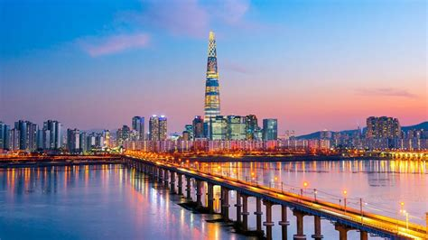

Mes destinations préfereés
Corée du Sud
La Corée du Sud est connue pour sa diversité. De nombreuses villes sont situées au milieu de montagnes magnifiques ou à proximité de belles îles et de plages attrayantes, ce qui en fait un endroit idéal à visiter
